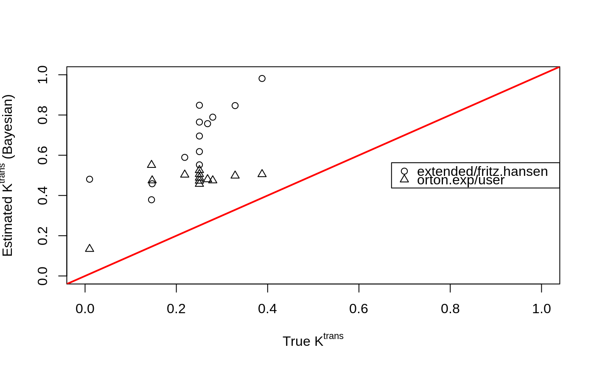
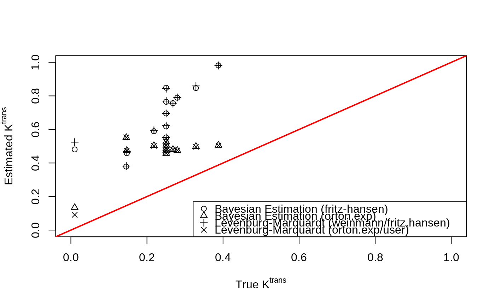

dcemri.bayes-methods.RdBayesian analysis of contrast agent concentration time curves from DCE-MRI.
dcemri.bayes(conc, ...)
# S4 method for array
dcemri.bayes(
conc,
time,
img.mask,
model = "extended",
spatial = 0,
aif = NULL,
user = NULL,
nriters = 3000,
thin = 3,
burnin = 1000,
tune = 267,
ab.ktrans = if (spatial == 0) c(0, 1) else { c(1e-04, 1e-04) },
ab.kep = ab.ktrans,
ab.vp = c(1, 19),
ab.tauepsilon = c(1, 1/1000),
samples = FALSE,
parallel = FALSE,
verbose = FALSE,
dic = FALSE,
...
)| conc | Matrix or array of concentration time series (last dimension must be time). |
|---|---|
| ... | Additional parameters to the function. |
| time | Time in minutes. |
| img.mask | Mask matrix or array. Voxels with mask=0 will be excluded. |
| model | is a character string that identifies the type of compartmental model to be used. Acceptable models include:
|
| spatial | is an integer specifying spatial smoothing of kinetic parameters
|
| aif | is a character string that identifies the parameters of the type
of arterial input function (AIF) used with the above model. Acceptable
values are:
|
| user | Vector of AIF parameters. For Tofts and Kermode: \(a_1\), \(m_1\), \(a_2\), \(m_2\); for Orton et al.: \(A_b\), \(\mu_b\), \(A_g\), \(\mu_g\). |
| nriters | Total number of iterations. |
| thin | Thining factor. |
| burnin | Number of iterations for burn-in. |
| tune | Number for iterations for tuning. The algorithm will be tuned to an acceptance rate between 0.3 and 0.6. |
| ab.ktrans | Mean and variance parameter for Gaussian prior on \(\log(K^{trans})\). |
| ab.kep | Mean and variance parameter for Gaussian prior on \(\log(k_{ep})\). |
| ab.vp | Hyper-prior parameters for the Beta prior on \(v_p\). |
| ab.tauepsilon | Hyper-prior parameters for observation error Gamma prior. |
| samples | If |
| parallel | If |
| verbose | Logical variable (default = |
| dic | If |
| vp | Fractional occupancy in the plasma space. |
Parameter estimates and their standard errors are provided for the
masked region of the multidimensional array. All multi-dimensional arrays
are output in nifti format.
They include:
Transfer rate from plasma to the extracellular, extravascular space (EES).
Error on \(K^{trans}\).
Rate parameter for transport from the EES to plasma.
Error on \(k_{ep}\).
Fractional occupancy by EES (the ratio between ktrans and kep).
Error on \(v_e\).
Fractional occupancy by plasma.
The residual sum-of-squares from the model fit.
Acquisition times (for plotting purposes).
Deviance information criterion.
Contribution to DIC per voxel.
Effective number of parameters.
Constribution to pD per voxel.
See Schmid et al. (2006) for details.
Schmid, V., Whitcher, B., Padhani, A.R., Taylor, N.J. and Yang, G.-Z. (2006) Bayesian methods for pharmacokinetic models in dynamic contrast-enhanced magnetic resonance imaging, IEEE Transactions on Medical Imaging, 25 (12), 1627-1636.
Volker Schmid volkerschmid@users.sourceforge.net
data("buckley")
xi <- seq(5, 300, by=5)
img <- array(t(breast$data)[,xi], c(13,1,1,60))
mask <- array(TRUE, dim(img)[1:3])
time <- buckley$time.min[xi]
## Bayesian estimation with Fritz-Hansen default AIF
fit.bayes <- dcemri.bayes(img, time, mask, aif="fritz.hansen",
nriters=1000, thin=2, burnin=200)
## Bayesian estimation with "orton.exp" function fit to Buckley's AIF
aif <- buckley$input[xi]
aifparams <- orton.exp.lm(time, aif)
aifparams$D <- 1
fit.bayes.aif <- dcemri.bayes(img, time, mask, model="orton.exp",
aif="user", user=aifparams,
nriters=1000, thin=2, burnin=200)
plot(breast$ktrans, fit.bayes$ktrans, xlim=c(0,1), ylim=c(0,1),
xlab=expression(paste("True ", K^{trans})),
ylab=expression(paste("Estimated ", K^{trans}, " (Bayesian)")))
points(breast$ktrans, fit.bayes.aif$ktrans, pch=2)
abline(0, 1, lwd=2, col=2)
legend("right", c("extended/fritz.hansen","orton.exp/user"), pch=1:2)

fit.lm <- dcemri.lm(img, time, mask, aif="fritz.hansen")
fit.lm.aif <- dcemri.lm(img, time, mask, model="orton.exp", aif="user",
user=aifparams)
plot(breast$ktrans, fit.bayes$ktrans, xlim=c(0,1), ylim=c(0,1),
xlab=expression(paste("True ", K^{trans})),
ylab=expression(paste("Estimated ", K^{trans})))
points(breast$ktrans, fit.bayes.aif$ktrans, pch=2)
points(breast$ktrans, fit.lm$ktrans, pch=3)
points(breast$ktrans, fit.lm.aif$ktrans, pch=4)
abline(0, 1, lwd=2, col=2)
legend("bottomright", c("Bayesian Estimation (fritz-hansen)",
"Bayesian Estimation (orton.exp)",
"Levenburg-Marquardt (weinmann/fritz.hansen)",
"Levenburg-Marquardt (orton.exp/user)"), pch=1:4)
